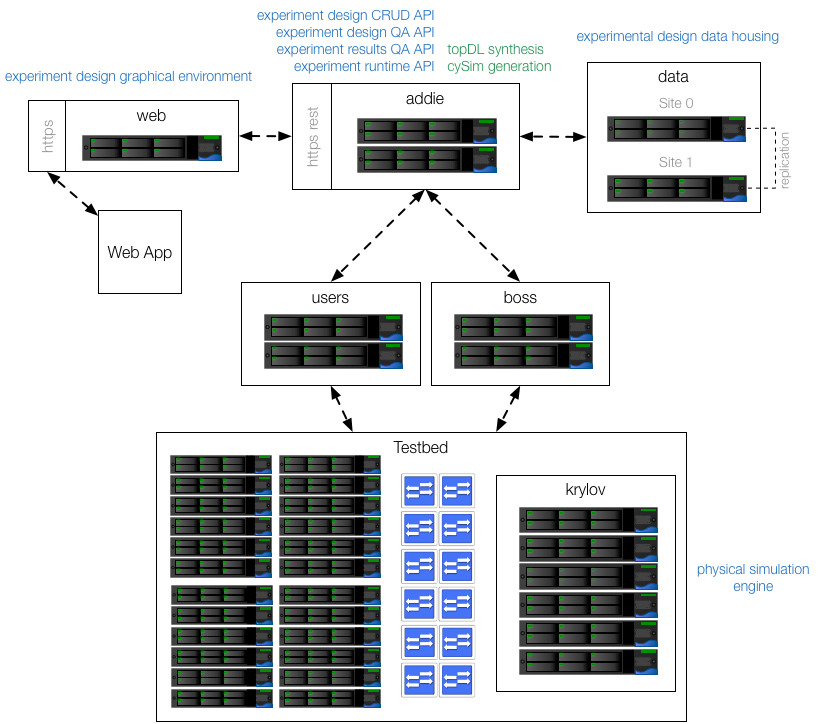

The cypress architecture provides three broad categories of capabilities to ICPS experiment designers; design, execution and analysis. The implementation of these capabilities comes together as a distributed server system that is depicted in the diagram below. In the sections that follow, the function of each component is described and how it participates with others. The internal design of these components is discussed in detail in later sections dedicated to that purpose.

Web
The web server serves the Cypress design web application as well as proxies https-rest API calls to addie. The proxy part is important as this is the only publicly addressed machine (for Cypress) in the whole architecture, and it is also necessary for the web application to access the services provided by addie without going cross-domain. This also provides a single uniform access scheme for third party tools, for the reference implementation of cypress at ISI, this machine will be cypress.deterlab.net.
Addie
addie stands for automated design deployment interaction and execution. addie is the core component of the Cypress architecture. As can been seen from the annotations, there are quite a few services that fall under the purview of addie. The services listed in blue comprise the Cypress API. At this time the only user of this API is the design web-application, however the APIs have been designed for multi tool/front-end usage.
addie is also home to the logic for interacting with the DeterLab network testbed environment. These responsibilities include translation of the cyber portions of Cypress data models into DeterLab TopDL models, coordinating the deployment and execution of control software and simulation programs with the DeterLab swap-in process, providing the design web-application with access to runtime experiment objects, and the execution of experiment timelines.
Finally, addie is also responsible for generating Cypress physics simulation programs. Cypress generates multiple-program-multiple-data (MPMD) distributed simulation code for each experiment based on the physical network model. When an API call comes in to execute an experiment, addie extracts a raw system of differential-algebraic equations (DAE) from the physical network model, creates a pseudo-optimal clustering of equations and variables from the DAE system and generates the MPMD programs based on this clustering. The execution of these programs is then orchestrated as a part of addie's interaction with the DeterLab swap-in procedure.
All of the data held in addie services is soft state, anything that is persistent is stored in data using a remote SQL API from addie. This was a design choice to allow for both good performance of addie services by having in-memory representations of experiment components that are actively being worked on, but also for providing a bit of fault tolerance by allowing services to restart from known good state in the data. In the cloud sense, addie would be considered the tier-1 services.
Data
The data servers hold Cypress' persistent data. The storage mechanism is simply a PostgreSQL database. The data servers are actually data0 and data1 where data resolves to data0 under normal operating conditions. The servers are located at physically different sites and use PostgreSQL's master-to-master replication over SSH for replication.
DeterLab
DeterLab is home to the emulated cyber network environment. Everything in testbed is under the control of DeterLab.
Users
users is where user data is housed that can be accessed both from the outside world and from active experiments running on DeterLab. This is the place where Cypress designers place control code and custom deployment scripts for launching that code.
Boss
boss orchestrates the execution of the DeterLab testbed. On receipt of a network environment description, boss is ultimately responsible for creating the representative network environment. It does this by allocating computers and network resources within the testbed, creating VLANs for isolation and connectivity and setting up the computers operating systems to integrate with the DeterLab runtime environment for things like users access and reporting back to boss with things like node readiness and lifecycle information.
Testbed
The testbed is a collection of computers and networking equipment that is configured by DeterLab in response to experiment swap-ins and swap-outs. For cypress there are a set of nodes (computers) within the testbed that are especially reserved for simulation, this is called the krylov cluster.
Krylov
The krylov cluster is a set of nodes specifically designed and configured for running physics simulations. These nodes have specially configured operating systems, high-performance hardware and compilers and network interconnects. The allocation and management of these nodes is a coordinated between addie and boss